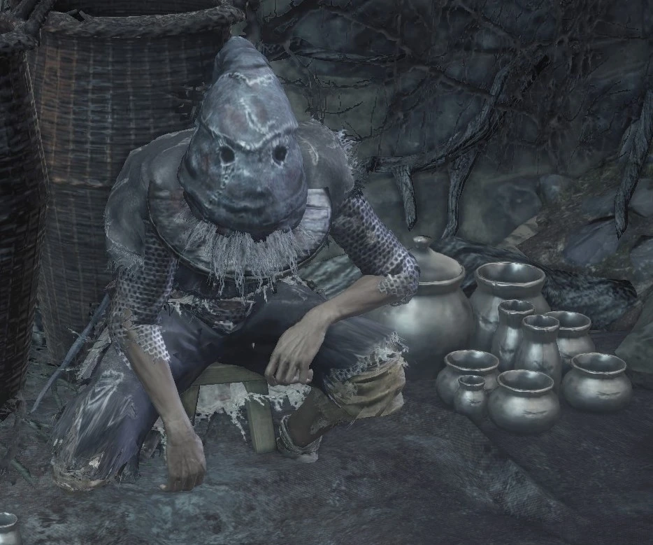

← Volver
← Volver
>Greirat del Asentamiento de los No Muertos es un NPC de Dark Souls III. Cuando encontramos a Greirat por primera vez, se encuentra prisionero cerca de la hoguera de la Torre en la Muralla en el Gran Muro de Lothric. Para liberarlo, debes recuperar la Llave de la Celda, que se puede encontrar en ese mismo área. Luego de abrir la puerta de su celda y de habalr con él, Greirat se reubicará en el Santuario del Enlace de Fuego, donde se convierte en un mercader. En el Santuario del Enlace, Greirat tendrá una línea de misión que involucra recuperar el Anillo de Lágrima Azul y llevárselo a una mujer que reside en el Asentamiento de los No Muertos.
Este acto de bondad forma un vínculo de confianza con Greirat, desbloqueando más interacciones con él. Periódicanmente, Greirat pedirá permiso para aventurarse en misiones de búsqueda o para "robar" objetos para ti. Si le otorgas el permiso, se retirará y regresará con varios nuevos objetos, que luego te venderá en el Santuario. Estás misiones pueden otorgar objetos valiosos y su inventario se expandirá basado en el éxito de sus actividades.
La línea de misión de Greirat del Asentamiento de los No Muertos se divide en 5 etapas principales:
1. RESCATAR A GREIRAT
2. AYUDA A GREIRAT CON LORETTA
3. PRIMERA INCURSIÓN DE GREIRAT (ASENTAMIENTO DE LOS NO MUERTOS)
4. SEGUNDA INCURSIÓN DE GREIRAT (IRYTHILL DEL VALLE BOREAL)
5. TERCERA INCURSIÓN DE GREIRAT (CASTILLO DE LOTHRIC)
| Greirat del Asentamiento de los No Muertos: Objetos | Variante | Cantidad | Probabilidad | Suerte |
|---|---|---|---|---|
| Cenizas de Greirat |
|
1 | 10% | No |
| Anillo de Lágrima Azul |
|
1 | 10% | No |
| Greirat del Asentamiento: Objetos Disponibles para la Venta | Cantidad | Almas |
|---|---|---|
| Disponible de inmediato | ||
| Brasa | 3 | 2000 |
| Grupo de Musgo Rojo Sangre | ∞ | 500 |
| Cuchillo Arrojadizo | ∞ | 20 |
| Bomba Incendiaria | ∞ | 50 |
| Bomba Incendiaria de Cuerda | ∞ | 50 |
| Cuchillo de Bandido | ∞ | 1500 |
| Espada Larga | ∞ | 1000 |
| Espada Bastarda | 1 | 3000 |
| Maza | ∞ | 600 |
| Lanza | ∞ | 600 |
| Ballesta Ligera | ∞ | 1000 |
| Escudo | ∞ | 2000 |
| Escudo Redondo de Alce Cornudo | ∞ | 1500 |
| Escudo Redondo | ∞ | 1000 |
| Escudo de Cometa | ∞ | 4000 |
| Yelmo Estándar | ∞ | 1500 |
| Armadura de Cuero Duro | ∞ | 2500 |
| Guanteletes de Cuero Duro | ∞ | 1000 |
| Botas de Cuero Duro | ∞ | 1000 |
| Máscara de Ladrón | ∞ | 400 |
| Flecha Estándar | ∞ | 10 |
| Flecha de Fuego | ∞ | 100 |
| Perno Estándar | ∞ | 30 |
| Greirat del Asentamiento: Objetos Disponibles para la Venta | Cantidad | Almas |
|---|---|---|
| Luego de enviarlo al Asentamiento de los No Muertos | ||
| Brasa | 4 | 2000 |
| Bendición Divina | 1 | 8000 |
| Polvo Reparador | ∞ | 300 |
| Urna Relámpago | 6 | 700 |
| Zweihander | ∞ | 6000 |
| Espada Curva de Caballero Pontífice | ∞ | 6000 |
| Estoc | ∞ | 3000 |
| Pica de Guerra | ∞ | 1500 |
| Guja | ∞ | 3500 |
| Arco Corto | ∞ | 1000 |
| Campana del Sacerdote | ∞ | 4000 |
| Escudo de Objetivo | ∞ | 2500 |
| Escudo de Caballero | ∞ | 1500 |
| Escudo de Caballero Pontífice | ∞ | 3000 |
| Yelmo de Caballero | ∞ | 2000 |
| Armadura de Caballero | ∞ | 3000 |
| Guanteletes de Caballero | ∞ | 2000 |
| Leggings de Caballero | ∞ | 3000 |
| Capucha de Asesino | ∞ | 1500 |
| Armadura de Asesino | ∞ | 1500 |
| Guantes de Asesino | ∞ | 1500 |
| Pantalones de Asesino | ∞ | 1500 |
| Flecha Grande | ∞ | 50 |
| Perno Pesado | ∞ | 100 |
| Perno de Francotirador | ∞ | 150 |
| Greirat del Asentamiento: Objetos Disponibles para la Venta | Cantidad | Almas |
|---|---|---|
| Luego de enviarlo al Asentamiento de los No Muertos | ||
| Bendición Divina | 1 | 8000 |
| Bendición Oculta | 1 | 8000 |
| Titanita Centelleante | 3 | 12000 |
| Escala de Titanita | 3 | 16000 |
| Candelabro del Erudito | ∞ | 3500 |
| Espade de Caballero de Lothric | ∞ | 4000 |
| Espadón de Caballero de Lothric | ∞ | 7000 |
| Lanza Larga de Caballero de Lothric | ∞ | 4500 |
| Ballesta de Caballero | ∞ | 3000 |
| Escudo de Caballero de Lothric | ∞ | 3000 |
| Gran Escudo de Caballero de Lothric | ∞ | 5000 |
| Flecha de Luz de Luna | ∞ | 500 |
| Gran Flecha Matadragones | ∞ | 500 |
| Flecha Relámpago Matadragones | ∞ | 750 |
| Rayo | ∞ | 300 |
| Greirat del Asentamiento: Objetos Disponibles para la Venta | Cantidad | Almas |
|---|---|---|
| Luego de enviarlo al Castillo de Lothric (vendido por la Sierva del Santuario) | ||
| Brasa | 6 | 2000 |
| Calavera Seductora | 6 | 500 |
| Urna Relámpago | ∞ | 700 |
| Perno Astillado | ∞ | 280 |
| Perno Explosivo | ∞ | 300 |
Diálogo del primer encuentro (Alto Muro de Lothric)
"Ahh, ¿no eres carcelero? No, no, eres de muy lejos. Y a juzgar por la campana... Debes ser algo de esa ceniza sin encender. Increíble, si eso es cierto, entonces tengo que pedirte un favor. Bajo la Gran Muralla hay un pueblito mohoso. No es el hogar de ningún señor, solo un antiguo asentamiento de no muertos. Una anciana, Loretta, vive allí. Por favor, dale este anillo. No... no pido caridad. De hecho, si haces esto por mí... te lo pagaré con la misma moneda. Puede que sea un ladrón de poca monta, pero tengo más ingenio que la mayoría de la realeza. ¿Qué dices entonces?"
Si se lo rechaza
"Sí, bueno, ¿por qué deberías? Pero si cambias de opinión, avísame, ¿eh? Solo soy un ladronzuelo. No tengo adónde ir. No es que haya nada que me llame por ahí... je."
Hablar luego de negarse
"Oh, ¿qué tenemos aquí? ¿Cambiaste de opinión, quizá? Me entregas el anillo y yo te ofrezco mi cooperación. No es un trato nada barato, ¿verdad?"
Al solicitar su ayuda
"Muy bien. Confío plenamente en ti. Soy Greirat del Asentamiento de los No Muertos y prometo ayudarte. Entrega este anillo a la vieja Loretta, al pie del Muro Alto. ...Haz tu parte, y yo haré la mía."
Si se lo ataca
"¡Caramba! ¿Qué demonios pasa ahora? ¡Me atraparon una vez, y ahora esto! ¡Una sola maldita vez! ¡Malditos sean los dioses!"
Al matarte
"Como dicen, "La rata acorralada lamerá las bolas de un gato".
Al matarlo
"(Perdóname, madre.) Perdóname, querida..."
Segundo encuentro (Santuario del Enlace de Fuego)
"Oh, hola, has vuelto. Y de una pieza. Bueno, ahora me toca hacer mi parte. Cualquier baratija que necesites, dila. Eso sí, no me preguntes dónde la conseguí".
Seleccionar "hablar"
"Hazme un favor y no olvides nuestra promesa. Dale este anillo a la vieja Loretta, al pie del Muro Alto. Es una molestia, lo sé, pero me ayudará a atar algunos cabos sueltos".
Al entregarle el Hueso de Loretta
"—¡Cielos! Ya estaba muerta... Gracias. Aunque no me sorprende. Mmm, casi un alivio, la verdad. Puedes quedarte el anillo. Como, bueno, un pequeño detalle de agradecimiento, supongo".
Al seleccionar "salir"
"Adiós, y cuídate. Ay, este lugar es un fastidio. ¿De qué sirve robar si no tienes adónde ir?".
Al atacarlo (Santuario del Enlace)
"Estás al borde del abismo, ¿verdad? ¡Pues no dejaré que me hundas! ¡En guardia, maldito bastardo!".
Al matarte
"Meada fría, ¿por qué llegamos a esto...".
Al matarlo
"(Grita) Ya he seguido mi curso, ¿no?".
Incursión (Asentamiento de los No Muertos)
"Ah, ahí estás. Estaba pensando... Sabes que soy un ladrón de poca monta. Bueno, quizá me ponga a rondar. De todas formas, todos están muertos o ahuecados, ¿no? Así que... podría traerte algunas armas o un tesoro. ¿Qué te parece?".
Al rechazar su solicitud
"Está bien, está bien. Si ese es tu deseo, solo puedo obedecer. Pero siéntete libre de cambiar de opinión más tarde. No quisiera perder mi toque...".
Al seleccionar "hablar"
"¿Qué pasa? ¿Has cambiado de opinión? Estoy listo para salir a robar en cualquier momento. Solo dime.".
Al enviarlo a saquear
"Gracias. No te decepcionarás. Greirat el Ladrón fue una vez un nombre muy conocido. Hasta que terminé pudriéndose en una celda...".
Al seleccionar "salir"
"Adiós. Me iré por un tiempo. Hasta luego. Cuídate, ¿entiendes? O mis esfuerzos habrán sido en vano.".
Al regresar y hablar con él
"Oh, hola, has llegado en un buen momento. Me costó un poco de investigación, pero por fin he conseguido algo. Anda, échale un vistazo.".
Incursión (Irythill del Valle Boreal)
"Ahh, hola, buen trabajo, digo. Descubrir Irithyll en el Valle Boreal, todo en un día de trabajo. Si las historias son ciertas, es el hogar de antiguos nobles adoradores de la luna, y debería estar repleto de tesoros. ¿Qué te parece? ¿Voy a ver qué encuentro?".
Al rechazar su solicitud
"Está bien, está bien. Si ese es tu deseo, solo puedo obedecer. Pero siéntete libre de cambiar de opinión más tarde. Detesto dejar una ciudad de nobles a la espera de ser destrozada...".
Al seleccionar "hablar"
"¿Qué pasa? ¿Cambiaste de opinión? Estoy listo para salir a robar en cualquier momento. Solo dime.".
Al enviarlo a saquear
"¡Mmm, buena elección! Soy greirat, el ladrón. Lo que traiga será digno de ese nombre.".
Al regresar y hablar con él
"Oh, entonces, ambos estamos sanos y salvos. Gracias a los dioses por eso. No me gusta ir tan de cerca. Podría haber muerto de no ser por ese peculiar caballero cebolla. Pero al final, todo valió la pena. Échales un buen vistazo. Seguro que te serán útiles.".
Incursión (Castillo de Lothric)
"Sabes, estaba pensando... En irme a otra ronda de robos. Debe haber algo útil en el Castillo de Lothric. Soy consciente del peligro. Ese castillo es una trampa mortal. Ni un solo hombre ha regresado ileso, ni siquiera en aquellos tiempos. Pero no quiero quedarme sentado y morir como un rata de poca monta. Y me considero tu amigo.".
Al rechazar su solicitud
"Está bien. Eres muy considerado, de verdad. Pero, si cambias de opinión, dilo. Lo dije en serio.".
Al seleccionar "hablar"
"¿Cambiaste de opinión? Espero que sí. Viví como una rata insignificante, pero preferiría no morir como tal.".
Al enviarlo a saquear
"Gracias por confiar en mí. Oh, no te preocupes. Conozco Lothric como la palma de mi mano.".

 ↑
↑